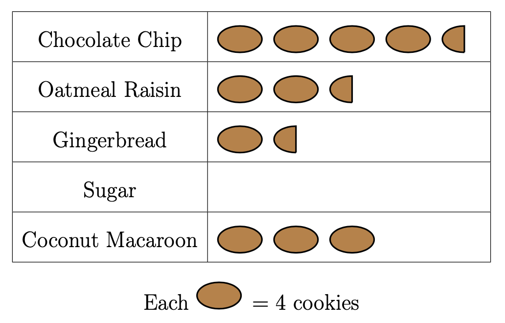
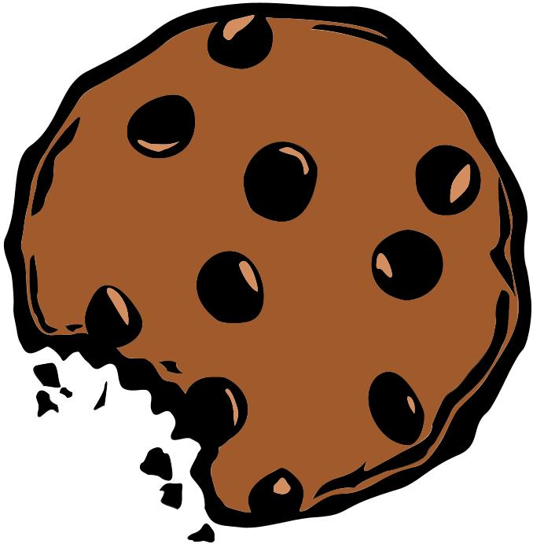
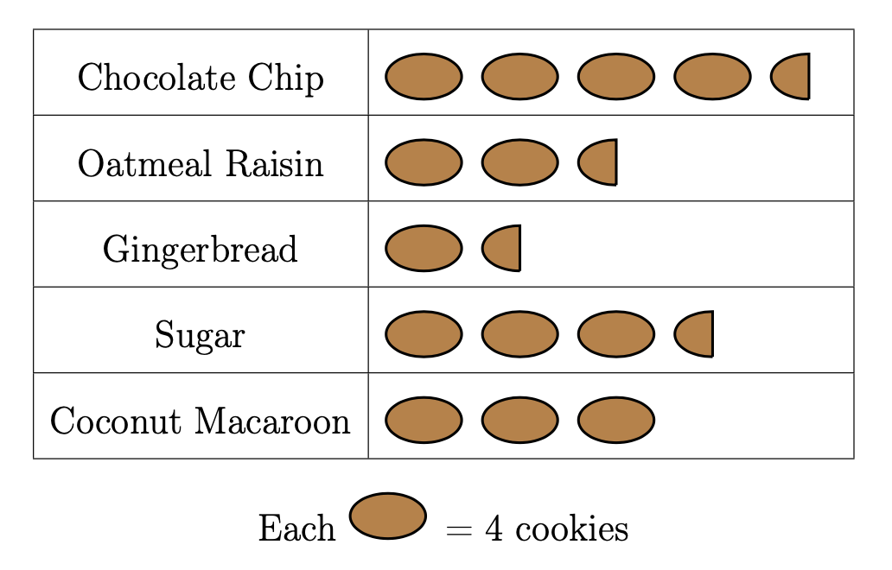
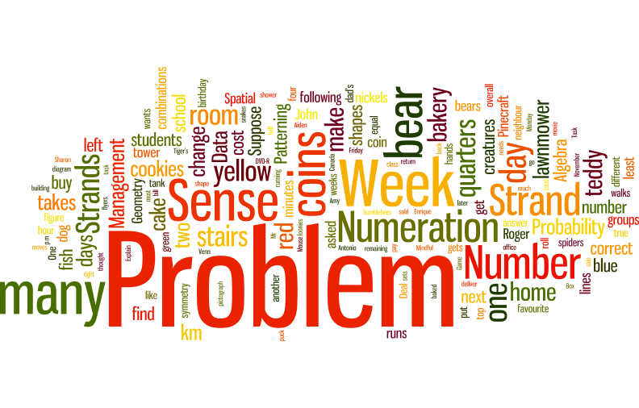

Problem
Janelle and Jean-Paul baked \(60\) cookies for a school bake sale. When Janelle and Jean-Paul got to school, they realized that they were missing the sugar cookies. Below is a pictograph of the cookies that they brought to the school.

How many sugar cookies had they forgotten at home? Complete the pictograph and explain your answer.

Solution
We will start by counting the known cookies represented in the pictograph. Since each full oval in the picture represents four cookies, then a half oval must represent half as many cookies, or two cookies.
So in the picture, we can calculate the number of different kinds of cookies:
Chocolate Chip: There are four full ovals, which represent \(4\times 4 = 16\) cookies. There is one half oval, which represents \(2\) cookies. So there are a total of \(16 + 2 = 18\) chocolate chip cookies.
Oatmeal Raisin: There are \(2\) full ovals, which represent \(2\times 4 = 8\) cookies. There is one half oval, which represents \(2\) cookies. So there are a total of \(8 + 2 = 10\) oatmeal raisin cookies.
Gingerbread: There is one full oval, which represents \(4\) cookies. There is one half oval, which represents \(2\) cookies. So there are a total of \(4 + 2 = 6\) gingerbread cookies.
Coconut Macaroon: There are three full ovals, which represent a total of \(3\times 4 = 12\) coconut macaroon cookies.
From this, the total number of cookies we know about is \(18 + 10 + 6 + 12= 46\).
Another way we could have computed the known number of cookies is by counting up all of the full ovals, for a total of \(10\), and counting up all of the half ovals, for a total of \(3\). The total number of cookies represented by full ovals is \(10 \times 4 = 40\). The total number of cookies represented by half ovals is \(3 \times 2 = 6\). Then the total number of cookies is \(40 + 6 = 46\).
Since Janelle and Jean-Paul baked a total of \(60\) ookies, but we can only account for \(46\) of them, then there are \(60 - 46 = 14\) cookies missing. These must be our sugar cookies.
We can figure out how many extra full ovals we need in our pictograph by dividing the number of sugar cookies we need to represent by \(4\) and getting the quotient of that calculation.
Since \(14 \div 4 = 3\) with a remainder \(2\), then we need \(3\) full ovals and \(1\) half oval to represent this number of sugar cookies.
The complete pictograph would look like this:

Teacher’s Notes:
Data visualization allows us to literally see the big picture. It is the process of linking graphical images to often complex, numerical information. This problem started with the graphic and students were required to compute the numerical information. Most of the time, we are given the numbers and produce a visual representation such as a bar chart, a pie graph, or a scatter plot.
Information visualization is relatively new field of study within computer science. Understanding graphics, human-computer interaction, and psychology is helpful when trying to process the increasing amount of big data that is being generated daily.
A word cloud is one way to visualize data. There is quite a bit of mathematics that goes into generating this graphic. This requires statistical analysis to determine the relative sizes of the words that appear, as well as geometry to determine how to arrange the output. Here is a word cloud generated from text from previous POTW-A problems. It was created using an online word cloud program.
